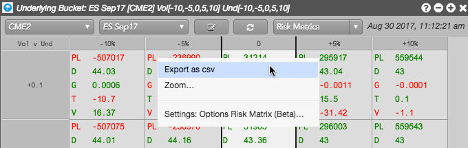
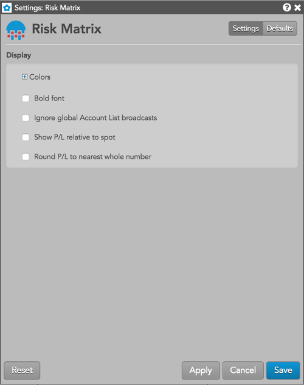

When you right-click in the widget to open the context menu, the following options are available:

The local settings affect only the selected Risk Matrix widget. To update the default settings with these values for newly-opened Risk Matrix widgets, or to expose an option to apply them to existing opened widgets, click Save as default.

Ignore global Account List broadcasts — {% include settings/ignore-acct-list.html %}
Show P/L relative to spot — Displays P/L in each scenario as the positive or negative difference from your current P/L. When enabled, P/L is displayed as "0" in the "0,0" cell (no underlying or volatility adjustment), and displayed in each scenario as the positive or negative difference from the current value (0,0). Impacts P/L output only, and does not affect Greeks or other risk metrics. By default, this setting is unchecked and P/L is displayed for each scenario in the matrix.
Round P/L to nearest whole number — Rounds P/L and Mark to Theo to the nearest whole number.